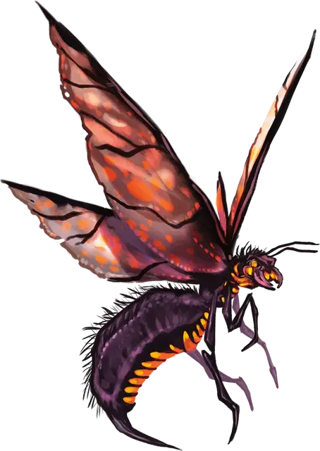

Адская оса
Hellwasp
Большое Исчадие, законно-злое

Класс Доспеха 19 (природный доспех)
Хиты 52 (8к10 + 8)
Скорость 10 футов, летая 60 футов (парит)
| мод | спас | ||
|---|---|---|---|
| СИЛ | 18 | +4 | +4 |
| ЛОВ | 15 | +2 | +5 |
| ТЕЛ | 12 | +1 | +1 |
| мод | спас | ||
|---|---|---|---|
| ИНТ | 10 | +0 | +0 |
| МДР | 10 | +0 | +3 |
| ХАР | 7 | −2 | −2 |
Уязвимость к урону холод
Иммунитет к урону огонь
Чувства тёмное зрение 60 футов, пассивное Восприятие 10
Языки Инфернальный, Телепатия 300 фт. (только с другими Адскими осами)
Опасность 5 (1800 опыта)
Бонус мастерства +3
Особенности
Магическое оружие. Атаки оружием Адской осы являются магическими.
Действия
Мультиатака. Адская оса совершает две атаки: одну жалом и одну мечевидными когтями.
Жало. Рукопашная атака оружием: +7 к попаданию, досягаемость 5 футов, одно существо. Попадание: 8 (1к8 + 4) колющего урона плюс 7 (2к6) урона огнём и цель должна совершить спасбросок Телосложения Сл 12, иначе станет отравленной на 1 минуту. Пока цель отравлена подобным образом, она парализована. Цель может повторять спасбросок в конце каждого своего хода, оканчивая на себе эффект при успехе.
Мечевидные когти. Рукопашная атака оружием: +7 к попаданию, досягаемость 5 футов, одна цель. Попадание: 11 (2к6 + 4) колющего урона.
Описание
Эти разумные и злобные насекомые водятся в Девяти Преисподних. У них жёсткий защитный панцирь, тонкие металлические крылья и сильные лапы с похожими на мечи когтями. С помощью жала они вводят своим жертвам химическую смесь, схожую с алхимическим огнём. В той же смеси содержится парализующий фермент, который обездвиживает жертву на время, чтобы оса могла унести её.
Адские осы любят тёплый климат, от сильного холода же их панцири трескаются, а обмен веществ останавливается. Поэтому они избегают ледяных кругов Девяти Преисподних (Стигии и Кании).
Гнёзда. Адские осы отрыгивают золотистую желчь, похожую на янтарь, с помощью которой создают исполинские гнёзда, полные внутренних помещений и переходов. В этих гнёздах осы совместно живут и хранят пищу. Типичное гнездо достаточно велико, чтобы вместить сообщество из 1к10 + 10 Адских ос. Каждая оса играет равную роль в их обществе.
Телепатия Адских ос. Осы общаются друг с другом при помощи особой формы телепатии, которую воспринимают только представители их вида.